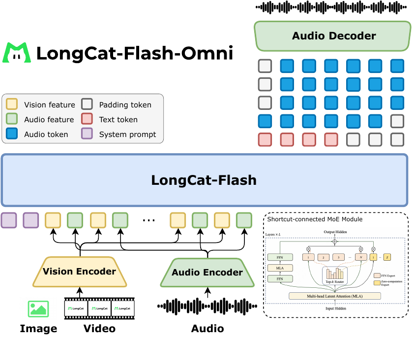
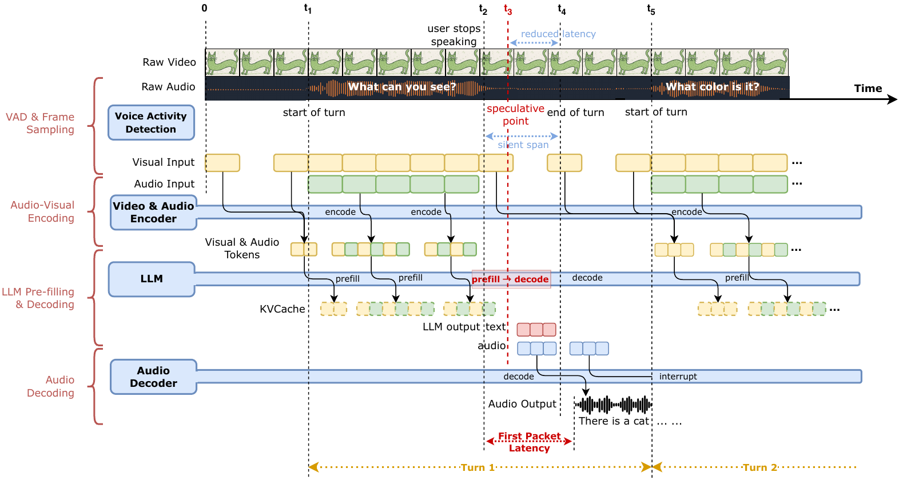

1. 全模态实时交互的难点
作者把 omni-modal real-time interaction 拆成 4 个互相牵制的难题（Section 1）：
- Cross-modal heterogeneity：text 是高度压缩的符号表示，speech 是连续声学信号且语义密度远低于 text（speech tokenizer 12.5 Hz 每秒产 ~12.5 个 token，而人类口语每秒只产 3-4 个 text token），image/video 又引入空间/时空结构。模态间结构差异巨大，强行一起训会拖垮单模态性能。
- Unified offline + streaming：离线多模态理解和流式交互场景的算法需求不同——流式要感知相对时间、音视频精准同步、长上下文多轮管理。把这两个能力塞进同一个模型很难。
- Real-time latency：要支持流式 audio + video 输入 + 流式 speech 输出，对 560B 模型来说，"millisecond-level response latency" 本身就是工程奇迹。
- Training efficiency：模态间数据分布和模型算力需求严重异构，纯 FSDP 在 560B 上不实用，pipeline bubble 也会被异构性放大。
2. 架构：拼接式 omni（Encoder-Decoder 拼到 LongCat-Flash 上）
整体架构是 Section 2 + Figure 1（architecture.pdf）描述的：完全 end-to-end，3 个轻量外挂模块 + LongCat-Flash LLM backbone。三个轻量组件参数都在 600M 量级，相对 560B LLM 几乎可以忽略。
2.1 Vision Encoder（LongCat-ViT，637M）
基于自家 UnivTAR 工作（qiao2025univitar），Transformer-based + 一堆现代 trick：
| 配置项 | 值 |
|---|---|
| Patch size | 14 |
| Hidden size | 1280 |
| Intermediate size | 5184 |
| Layers / Heads | 32 / 16 |
| Position embedding | 2D-RoPE |
| 激活函数 | SwiGLU + RMSNorm + LayerScale + QK-norm |
| Parameters | 637M |
关键设计：
- Native resolution encoding：不像 CLIP/SigLIP 那样 resize 到固定分辨率，而是允许任意宽高比，patch 数训练时限定在 576-5832 范围，做最小 resize 让两维都能被 112 整除。这避免了极端宽高比的信息丢失。
- 2× pixel-unshuffle：在空间维度做下采样，缓解高分辨率带来的二次方计算开销。
- Contrastive pretraining：在 14.6 billion 样本上从零训，progressive resolution adaptation（224 固定分辨率 → native resolution）+ progressive visual modality adaptation（视频数据推迟到最后阶段才加入），训练早期还用冻结的预训练 ViT 做 feature distillation 作为 auxiliary objective，后期权重逐渐衰减。
2.2 Audio Tokenizer / Encoder / Decoder（基于 LongCat-Audio-Codec）
这块的设计哲学是 discrete token 用于 LLM next-token prediction，continuous feature 用于输入理解——两套并行：
| 组件 | 用途 | 关键参数 |
|---|---|---|
| Audio Tokenizer (LongCat-Audio-Codec) | 把波形切成 4 codebook discrete token，frame rate 16.67 Hz | 1 codebook 语义 + 3 codebook 声学；用于 LLM 输入（pre-train stage 1-4）和 LLM 输出 |
| Audio Encoder (~600M, 流式) | 把原始语音转 continuous feature，输入 LLM | 80-dim Fbank 输入；Pre-FFN 8× frame downsampling（每帧 80ms）；FSMN 层替换 self-attention（受限上下文窗口）；最后 6 层 one-frame look-ahead；CTC loss 训练 |
| Audio Decoder (~600M, 流式) | 把 4-codebook token 还原成波形 | LSTM + Conv + causal transposed conv；look-ahead 仅 3 frames（≈180ms）；GAN 框架训练；不用 diffusion/flow-matching code2mel——为了低延迟直接 Code2Wav |
2.3 LLM Backbone（继承 LongCat-Flash）
直接用 LongCat-Flash 的 560B MoE：
- Multi-head Latent Attention (MLA)（来自 DeepSeek）
- Shortcut-connected MoE (ScMoE) + zero-computation experts（来自自家 ICCV'24 工作）
- 激活参数 18.6B-31.3B（平均 27B），per-token 变计算预算
这些设计原封不动继承，不改动——这是 LongCat 系列的"基座哲学"，omni 只是在外面挂感知/解码模块。
2.4 Video Strategy（三阶压缩）
视频处理要平衡 duration 跨度大（几秒到几小时）+ 分辨率跨度大：
- Dynamic frame sampling：默认 2 FPS；短视频提高 FPS（至少 16 帧），长视频按最大帧数上限均匀采样（SFT 阶段上限 512 帧）
- Textual timestamps：每帧前 prepend 文本
Second{i}，让模型显式感知时间点。序列形如Second{i} || V_i || Second{j} || V_j || ... - Hierarchical token compress（三步）：
- 每帧 patch 数受上限约束（patch range 576-5832）
- ViT 输入前用 temporal stride=2 的 3D conv，把 N 帧压成 N/2
- 进 LLM 前如果视觉 token 还超限，再做插值下采样
2.5 Streaming Audio-Visual Interaction（核心创新）

这是区别于离线 omni 模型的关键。两个机制：
机制 1：Streaming Audio-Visual Feature Interleaving
- 离线场景可以直接
concat(audio_feats, video_feats)；流式场景必须 尽早 prefill 进 LLM 才能降低首包延迟 - 设计 chunk-wise 交错格式（每 chunk 1 秒）：
`` <timestamp> : <video-tokens> <timestamp> : <video-tokens> ... ``
- timestamp 用文本形式（
Second{i}），和 Section 2.4 对齐
机制 2：Sparse-Dense Sampling Strategy（用户说话 vs 模型说话用不同采样密度）
- 用户输入期：chunk size = 1 秒，video 2 FPS（dense）—— 尽量保留信息
- 模型回复期：chunk size = 2 秒，video 0.5 FPS（sparse）—— buffer 到下一轮 prepend 进去
- 这样模型边回答边"看"视频，平衡了计算开销和视觉信息保留
3. 训练 pipeline（6 阶段 curriculum，2.5T+ 多模态 tokens）
全篇最重要的章节。核心 idea：按"sequence modeling 难度"递进——text < speech < image < video，逐步加模态，避免一种模态的训练拖垮另一种。
数据规模
总共 2.5T+ tokens 多模态语料，分 7 类：
- Audio data（speech-text interleaved + audio understanding）：tens of millions of hours
- Generic image-text、OCR/grounding/GUI、STEM、multi-image、video、long-context multimodal
Stage 0-5（6 阶段 curriculum）
| Stage | 目标 | 数据/规模 | 关键点 |
|---|---|---|---|
| Stage 0 Text Pre-Training | 文本基座 | ~16T tokens | 复用 LongCat-Flash 流程，constant LR；逐步加 STEM/code 比例 |
| Stage 1 Text-Speech Continued Pre-Training | 语音-文本对齐 | 5.1T tokens（text:audio = 2:1） | 4 个 audio prediction head 直接挂到 LLM；联合 loss = 1.75·text + 0.25·audio + 1.5·audio-text + 0.1·first-audio；4-codebook discrete token 输入 |
| Stage 2 Multimodal CPT | 加 vision | 3T+ tokens（text:audio:vision = 2:1:1） | ViT 从 LongCat-ViT 初始化，projector 随机初始化；额外 vision loss 权重 0.25 |
| Stage 3 Multimodal Annealing | 高质量数据 + 加 video | 0.33T tokens | 引入 video caption/QA + OCR/grounding/GUI/multi-image/STEM；PPL-gap signal 自动调采样权重（落后于参考的子集加大采样比例） |
| Stage 4 Context-Length Extension | 长 context | 8K → 32K（100B tokens）→ 128K（20B tokens） | RoPE base 1M → 5M → 10M；保持 text:vision:speech = 2:1:1 |
| Stage 5 Audio Encoder Alignment | 用 continuous audio 替代 discrete token | LLM 冻结，只训 audio encoder | 因为发现离散 token 损失了 fine-grained acoustic detail；用 ASR + audio understanding 数据，CTC loss |
Post-Training
- SFT：~3M image-text 样本 + ~700K video-text + audio understanding + vision-speech QA（新构造，TTS 合成）+ audio-visual understanding（time-synchronized）+ speech-to-speech interaction + audio-visual interaction（human-in-the-loop 构造多轮对话）。Audio encoder 冻结，其他更新；AdamW，peak LR 1e-5，1 epoch，batch 1024。
- RL (DPO)：扩展到 text + multi-codebook audio 联合优化。Loss =
α·L_DPO(text) + β·Σ L_DPO(audio_i)，α:β = 1:1，KL 正则系数 0.1，1 epoch，batch 256。 - Audio-Visual Interaction Data 构造的亮点：6 维能力 taxonomy（memorization/understanding/analysis/creation/application/entertainment）→ PySceneDetect 切场景 → 多模态 LLM 生成多轮 QA（带 logical progression + referential dependency）→ LLM-as-judge 过滤 → 人工改写 5 类错误（事实不一致/响应不足/指代不明/语言不自然/语义不相关）→ TTS 合成。这一步必须 human-in-the-loop，因为纯模型生成会幻觉。
4. 实验：Latency + 各模态 benchmark
4.1 实时音视频交互（这是真正的卖点）
端到端 latency（Section 7.2 Asynchronous Streaming Pipeline）：
- 每个请求 packet = 1 秒音频 + 2 帧视频
- 流式 prefill（边接收边算），用户说完话前的 silence 期 600-700ms 用来 VAD 端点检测，和 prefill 计算 overlap
- 端点检测结束后，用户 <100ms 内 收到首包响应
- 整体 server-side 端到端 latency 大约 613 ms（早期版本提到，正式版用 "<100ms after endpoint detection" 描述）
实时交互质量（Table 31 + 32，200 个 3 分钟多轮对话，10 位专业对话员，250 用户三标注）：
| 模型 | Score (0-3) | 95% CI |
|---|---|---|
| Doubao | 1.92 | [1.85, 1.98] |
| GPT-4o | 1.79 | [1.72, 1.85] |
| iFlytek Spark | 1.25 | [1.18, 1.32] |
| StepFun | 1.22 | [1.15, 1.28] |
| LongCat-Flash-Omni | 1.37 | [1.30, 1.44] |
| ChatGLM | 0.99 | [0.93, 1.05] |
| Qwen2.5-Omni | 0.96 | [0.89, 1.02] |
| Qwen3-Omni | 0.81 | [0.75, 0.87] |
开源 SOTA（比 Qwen3-Omni 高 0.56 分），但和 Doubao/GPT-4o 还有差距。定性分析（Table 32，"good case %"）：
| 维度 | LongCat-Flash-Omni | 最佳模型 |
|---|---|---|
| Paralinguistic Understanding | 91.5 | Doubao 88.0 |
| Memory Capability | 94.5 | Doubao 98.0 |
| Relevance | 54.5 | Doubao 66.5 |
| Real-timeness | 49.5 | GPT-4o 71.5 |
| Human-likeness | 62.5 | Doubao 93.5 |
| Accuracy | 36.0 | Doubao 65.0 |
作者诚实承认差距：实时性（用户停顿过敏、抢话）、拟人度（pronunciation error、stuttering、电子音）、accuracy（动态物体识别强，但文字/数字识别弱）。
4.2 跨模态理解（OmniBench 等）
| Benchmark | LongCat-Flash-Omni | Gemini-2.5-Pro (TB128) | Gemini-2.5-Flash | Qwen3-Omni | Qwen2.5-Omni |
|---|---|---|---|---|---|
| OmniBench | 61.38 | 66.80 | 54.99 | 58.41 | 48.16 |
| WorldSense | 60.89 | 63.96 | 58.72 | 52.01 | 46.69 |
| DailyOmni | 82.38 | 80.61 | 80.78 | 69.33 | 47.45 |
| UNO-Bench | 49.90 | 64.48 | 54.30 | 42.10 | 32.60 |
开源 SOTA 在前 3 个 benchmark，UNO-Bench 略弱于 Gemini。
4.3 单模态：Image / Video / Audio / Text
Image（Table 6，对比 Gemini-2.5-Pro/Flash, GPT-4o, Qwen3-Omni, Seed-1.6, Qwen3-VL-235B, Qwen2.5-VL-72B）：
- General：MMBench-EN 87.5、MMBench-ZH 88.7、RealWorldQA 74.8、MMStar 70.9
- STEM：MathVista 77.9、MMMU 70.7、MMVet 69.0
- Multi-Image：BLINK 63.1、MuirBench 77.1、Mantis 84.8（多项第一，受益于 interleaved image-text + video 训练）
- Grounding：RefCOCO-avg 93.9（第一）、CountBench 92.4
- GUI：ScreenSpot-v2 91.2、AndroidControl 91.2、VisualWebBench 78.7
- 整体判断：和 Gemini-2.5-Flash 相当，优于 Qwen3-Omni
Video（Table 7）：
- Short：MVBench 75.2（显著领先 Gemini-2.5-Pro 66.4 和 Qwen3-Omni 69.3）、NextQA 86.2、TempCompass 82.2
- Long：VideoMME w/o audio 76.2、w/ audio 78.2（omni 模型里第一）、LongVideoBench 69.3
- STEM：MMVU 67.1、Video-MMMU 67.5（弱于 Gemini-2.5-Pro 75.6/79.4）
Audio（Tables 13-15）：
- ASR：LibriSpeech test-clean 1.57 / test-other 4.01，AISHELL-1 0.63（极强），CommonVoice15-zh 4.98（弱于 Qwen3-Omni 4.31）
- S2TT：CoVost2 en→zh 47.23、zh→en 27.32
- Audio Understanding：MMAU 75.90（仅次于 Qwen3-Omni 77.5）、VocalSound 92.76、TUT2017 65.43（远超 Gemini 33.15）、CochlScene 70.02（远超 Gemini 45.34）
- Audio-to-Text Chat：VoiceBench IFEval 77.99（第一）、AdvBench 100（第一）
Text（Table 11 Base + Table 12 Instruct）—— 验证"加多模态不破坏文本能力"的核心 claim：
Base（对比 LongCat-Flash Base / DeepSeek-V3.1 / Kimi-K2）：
| Benchmark | LongCat-Flash-Omni Base | LongCat-Flash Base | DeepSeek-V3.1 | Kimi-K2 |
|---|---|---|---|---|
| MMLU | 86.81 | 87.05 | 87.46 | 87.47 |
| MMLU-Pro | 69.05 | 70.32 | 59.29 | 68.36 |
| GPQA | 51.76 | 51.09 | 47.16 | 45.89 |
| SuperGPQA | 54.71 | 54.19 | - | 44.70 |
| DROP | 80.75 | 78.39 | 80.74 | 69.81 |
| MATH | 66.80 | 64.82 | 61.56 | 66.74 |
| MultiPL-E | 70.76 | 69.25 | 62.00 | 59.22 |
关键判断：和 LongCat-Flash Base 相比，多模态训练后文本能力不仅没退化，反而在 GPQA/SuperGPQA/MATH/MultiPL-E 上微涨——作者把这归因于模态间协同。这是 early-fusion 训练策略成功的最强证据。
Instruct（对比 DeepSeek-V3.1 / Qwen3-2507 / Kimi-K2 / GPT-4.1 / Claude Sonnet-4 / Gemini-2.5-Flash）：
| Benchmark | LongCat-Flash-Omni Instruct | LongCat-Flash | DeepSeek-V3.1 | Qwen3 MoE-2507 | Kimi-K2 | GPT-4.1 |
|---|---|---|---|---|---|---|
| MMLU | 90.30 | 89.71 | 90.96 | 90.23 | 89.86 | 89.64 |
| MMLU-Pro | 82.73 | 82.68 | 84.45 | 84.83 | 82.06 | 81.72 |
| CMMLU | 89.39 | 84.34 | 88.04 | 88.14 | 89.66 | 77.65 |
| MATH500 | 97.60 | 96.40 | 96.08 | 98.80 | 97.60 | 90.60 |
| AIME24 (avg@10) | 72.92 | 70.42 | 66.30 | 81.67 | 69.60 | 47.00 |
| BeyondAIME | 47.40 | 43.00 | 36.50 | 57.60 | 36.60 | 22.10 |
| LiveCodeBench | 52.64 | 48.02 | 56.40 | 46.48 | 46.70 | 39.21 |
文本能力整体和 LongCat-Flash 持平或微涨（AIME/BeyondAIME 提升明显），但弱于 Qwen3-2507 这种 thinking 路线模型。
5. 与 LongCat-Flash 基座的关系
这是 omni 报告里反复强调的核心 claim：
| 继承的（原封不动） | 改动/扩展的 |
|---|---|
| ScMoE + zero-computation experts 架构 | 加 ViT (637M) + Audio Encoder (~600M) + Audio Decoder (~600M) |
| MLA (Multi-head Latent Attention) | 加 4 个 audio prediction head |
| 训练 infra（determinism、Grouped GEMM 优化、Fused Permute、Fused RoPE 等） | 加 Modality-Decoupled Parallelism (MDP) + ModalityBridge |
| Stage 0 文本预训练 checkpoint 作为 omni 起点 | Stage 1-5 全新加的多模态训练 |
| LongCat-Flash 的 text SFT 数据 | 加多模态 SFT 数据（image/video/audio/interaction） |
美团 LongCat 团队的"基座哲学"在这里很清楚：LongCat-Flash 是一切的根，Thinking / Omni / Lite / Prover 都从它的某个中间 checkpoint 起步，根据目标方向做扩展。Omni 走的是"外挂轻量模块 + curriculum 训练"路线，不动 LLM backbone。
6. 与 LongCat-Next 统一离散 token 路线的对比
这是 LongCat 系列内部的方法论分歧：
| 维度 | LongCat-Flash-Omni (2511, 本文) | [[2603_LongCat_Next | LongCat-Next]] (2603.27538) |
|---|---|---|---|
| 路线 | Encoder-Decoder 拼接式（外挂轻量模块） | 原生统一（DiNA + dNaViT） | |
| 模态表示 | 各模态独立 encoder → 投影到 LLM latent 空间；audio 用 4-codebook discrete token | 所有模态统一离散化成 token，单一 tokenizer | |
| LLM 角色 | 处理 fused embedding，输出 text + audio token | 处理所有 token，端到端 | |
| 优势 | 模块可独立优化；bit 级一致性；部署简单；可继承文本基座；易复现 | 真正"原生"统一；模态间 inductive bias 一致；理论上 scaling 上限更高 | |
| 劣势 | 模态间不是真正统一；encoder/decoder 是"补丁"；扩展到新模态要重训模块 | 训练复杂度高；破坏文本基座的成熟优化；工程实现风险大 |
7. 训练 Infra：Modality-Decoupled Parallelism (MDP)
值得单独说一下的训练 infra 创新（Section 6）：
问题：多模态训练有两种异构性：
- 数据异构：text/speech/vision 的 token 长度分布差异巨大（Figure data_distribution）
- 模型异构：audio encoder (mean 3.29 TFLOPs) / vision encoder (mean 89.85) / LLM (mean 3531.32) 的算力消耗差 3 个数量级（Table modal_cost_dit）
纯 FSDP（OrchMLLM, veOmni）在 560B 上不实用，因为参数太大。现有 decouple 方案（DistTrain, PipeWeaver, Optimus）思路接近但实现细节不同。
MDP 设计：
- 模态 encoder 用 HSDP（Hybrid Sharding Data Parallel）降静态内存
- LLM decoder 用 PP + ZeRO-1 DP + CP + EP
- 引入 InnerDP：$d_{inner\_dp} = d_{lm\_cp} \times d_{lm\_pp}$，让模态 encoder 的 DP rank 和 LLM decoder 一一对应
- 4 阶段执行：Data Loading → Modality Encoder Forward → LLM Forward+Backward → Modality Encoder Backward
ModalityBridge（chunk-based）：
- 解决
inner_dp=0rank 内存爆炸问题 - 把 gather-scatter 分成
num_chunk次迭代，峰值内存降到 1/num_chunk - 保持 bit 级数值一致性
性能结果：
- 多模态训练保持 >90% text-only throughput
- 不优化时单 device 内存 137 GB，优化后压到 72 GB（V-half PP schedule + Selective Recompute + Memory Efficient Permute + NCCL Memory Opt + HSDP for Modality Encoder）
8. 关键链接
- LongCat Chat: https://longcat.ai
- HuggingFace: https://huggingface.co/meituan-longcat/LongCat-Flash-Omni
- GitHub: https://github.com/meituan-longcat/LongCat-Flash-Omni
- arXiv: https://arxiv.org/abs/2511.00279
9. 相关工作（wikilink）
- LongCat-Flash — 文本基座，本文的起点
- LongCat-Next — 后续原生统一离散 token 路线
- 同期 omni 模型：Qwen3-Omni、Qwen2.5-Omni、Baichuan-Omni、Ola、VITA、GLM-4-Voice
- 闭源参考：Gemini-2.5-Pro/Flash、GPT-4o、Seed-1.6